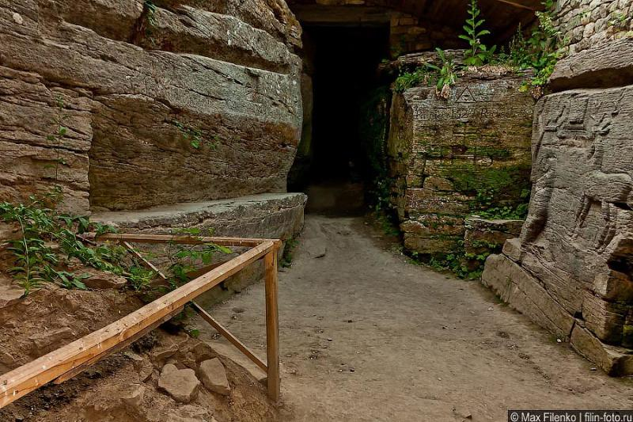
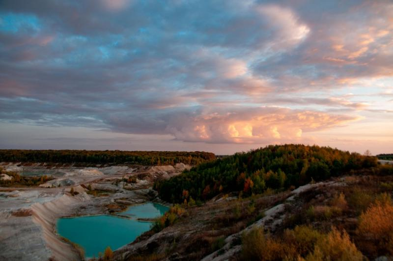
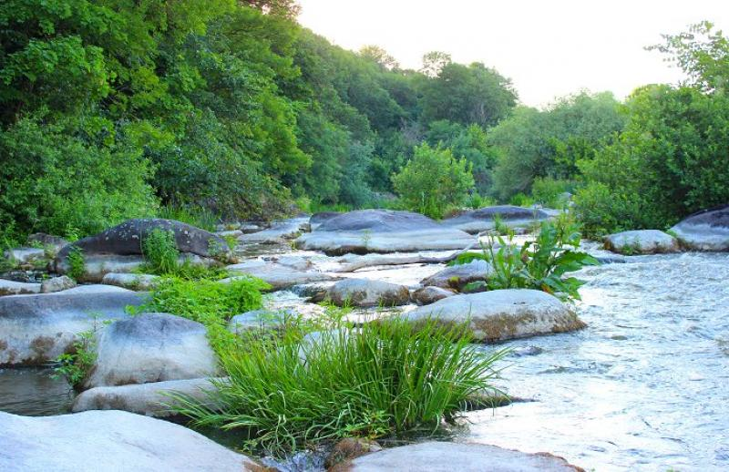

Село Буша
Де: Вінницька обл, Ямпільський р-н, село Буша

Мало хто знає, що на Вінниччині, у долині злиття трьох річок процвітає чудове та енергетично сильне село Буша.
Воно вабить не лише чаклунів, а й звичайних українців. Побувавши там хоча б раз, неможливо не захотіти туди повернутись.
Глухівський блакитноводий кар’єр з білим піском
Де: Вінницька обл, Козятинський район, село Глухівці

Хтось називає цю місцевість «українським Памуккале», за аналогією з неймовірними травертиновими терасами в Туреччині,
хтось — природним дивом. За 200 метрів до в’їзду в село Глухівці, з лівої сторони дороги, простягається кар’єр,
внизу якого знаходиться чарівне озеро небесно-блакитного кольору, оточене білим пісковиком.
Кар’єр діючий, тому під час проведення робіт близько до озера не підпустять, проте можна милуватись красою згори.
Але якщо роботи не проводять, можна попроситися погуляти й біля самого озера.
Печерські пороги
Де: Вінницька обл. Тульчинський р-н, село Печера

Неймовірно гарне місце на березі Південного Бугу, що лежить в 19 кілометрах на південних захід від Немирова.
Населений пункт вражає мальовничістю краєвидів: село розташоване на схилах Південного Бугу.
Ріка у цій місцині з обох сторін затиснута поміж скель та утворює каскад порогів.